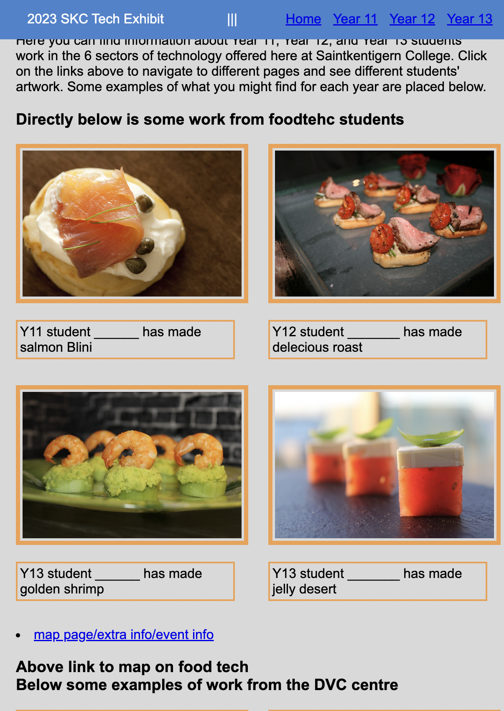
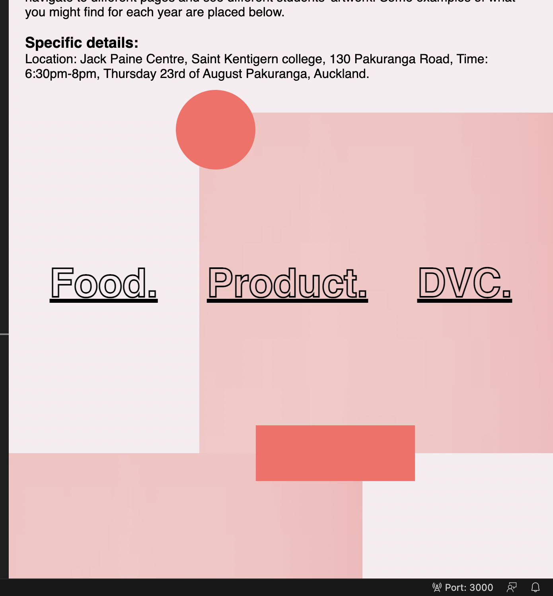
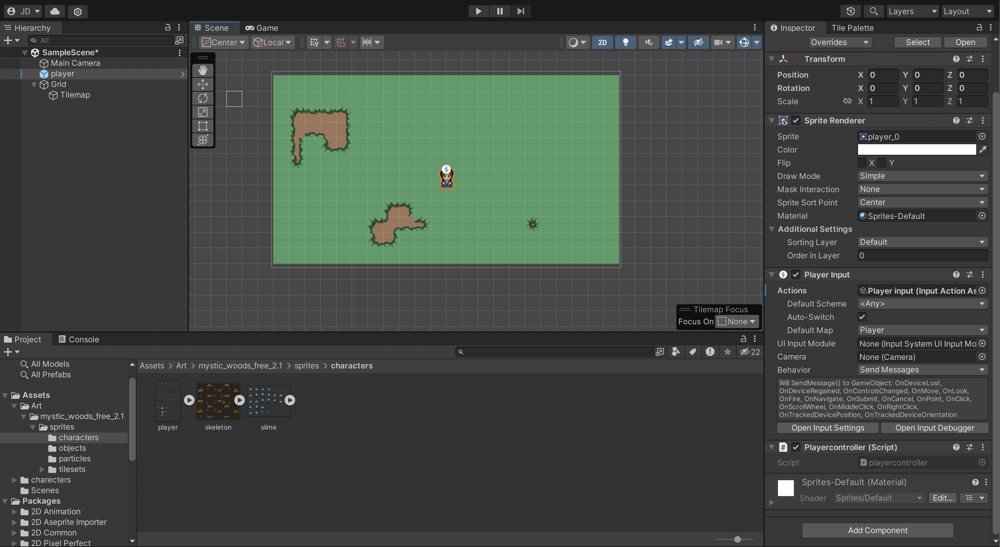
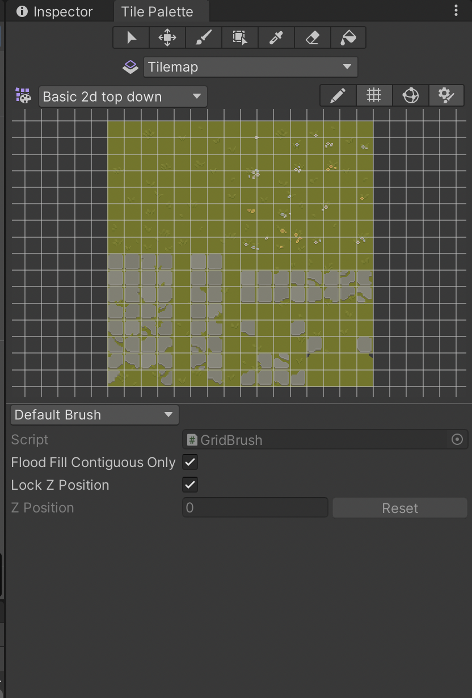
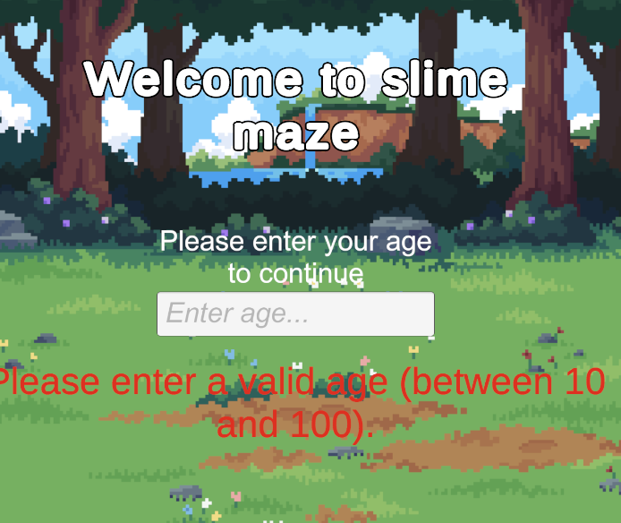

❮
❯
Click on images to expand
This project showcases a user-friendly website designed ro showcase the work produced by SKC food technology students. It highlights the integration of modern web design principles, responsive layouts, and features such as an online menu, a blog section for food-related articles, and a contact form for customer inquiries.
In this project, the focus is on the design and presentation innovative tech products made by students at SKC in the product design classes. The image illustrates detailed sketches, 3D models, and prototypes, showcasing the iterative design process. Emphasis is placed on user experience, functionality, and aesthetic appeal to ensure market competitiveness.
This project represents a homepage design for a technology exhibition. The image features a vibrant layout that captures the essence of innovation and technology. Key elements include highlighted exhibitors, event schedules, and interactive sections to engage visitors and encourage participation in the exhibition.
This project focuses on the development of a game called "Slime Maze." The image shows the design of various levels, featuring colorful graphics and engaging gameplay mechanics. The project highlights the programming and artistic elements involved in creating a fun and interactive gaming experience.
This project involves pixel art design for the "Slime Maze" game. The image illustrates the pixel editing process, showcasing the creation of unique characters and environments. Attention to detail in color selection and design ensures that each element contributes to the game's overall aesthetic.
This project presents the opening screen design for "Slime Maze." The image captures the colorful and inviting atmosphere of the game, featuring the main character and title. The design is aimed at attracting players’ attention and creating an engaging first impression that invites them to explore the maze.